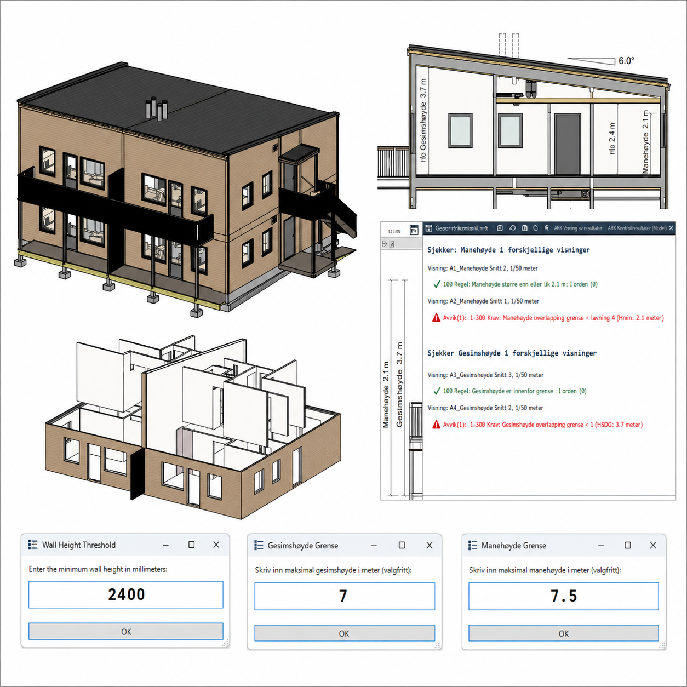

Add your image here'"/>As part of my ongoing efforts in automation and digital workflows, I created a series of tailored PyRevit tools aimed at improving architectural quality control and model visualisation within Autodesk Revit. These tools utilise the Revit API for real-time analysis and streamline repetitive design validation tasks.
This script isolates all walls in a Revit model that exceed a user-defined height threshold. Upon execution, the tool prompts the user to input a preferred wall height (e.g. 2400 mm), then examines the model, identifies walls that meet or exceed this threshold, and automatically isolates them in the current view.
This allows architects to quickly visualise and analyse elements that diverge from standard height constraints, enhancing quality control and facilitating efficient design reviews.
This tool verifies and compares essential architectural dimensions — Gesimshøyde (eaves height) and Mønehøyde (ridge height) — across various views within a Revit model. Users specify maximum allowable heights, and the script scans all dimension elements for corresponding labels.
If any dimension surpasses the defined limits or reveals inconsistencies between views, the tool triggers a red warning flag — aiding regulatory compliance and ensuring accurate communication of vital height information.
Both tools significantly enhance model consistency, speed, and accuracy. They were developed to promote data-driven design validation within architectural workflows, empowering architects to make informed decisions directly in Revit.